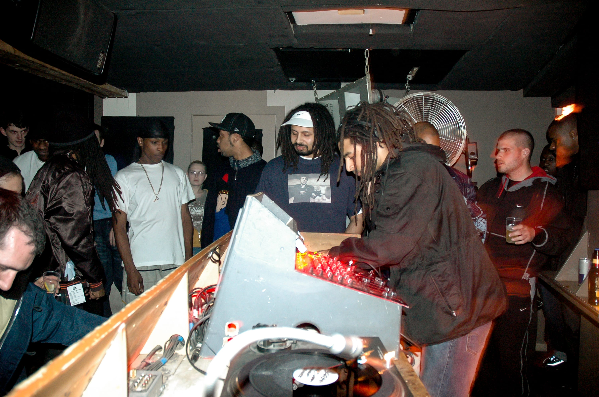
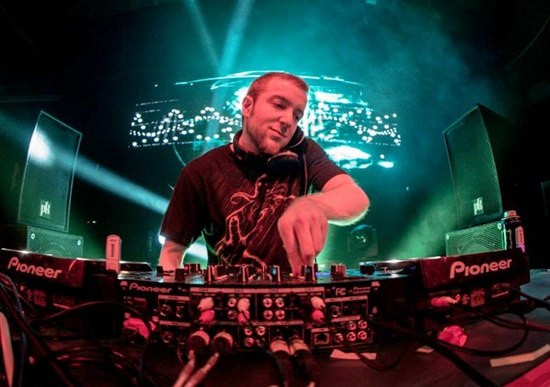
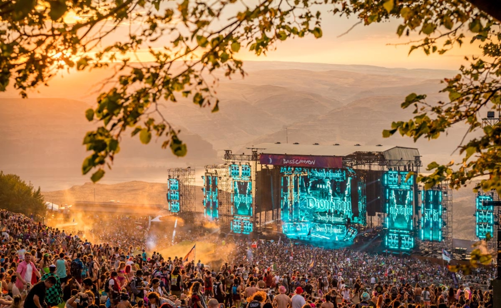

Origins
Dubstep originated in the early 2000s in South London, England, as a darker and more experimental subgenre of UK garage. DJs and producers like Skream, Benga, and Coki are credited with pioneering the sound at the nightclub Forward>>. An article from the time described the genre as "b-lines to make your chest cavity shudder."
Image of the origins of dubstep in South London by Georgina Cook from Redbull
2005-2010
By the late 2000s, dubstep had reached outside of the UK, gaining international recognition and popularity. BBC 1 Radio Host, DJ Mary Anne Hobbs is widely responsible for the rise in popularity, after hosting a show called Dubstep Warz that gained traction among global audiences. At this point artists like Rusko and Caspa were headlining festivals around the world, while a Baltimore DJ, Joe Nice began popularizing the sound in the United States.

Image of DJ Rusko by Unknown from Mix Mag
{kind=link}
2010-2020
As the dubstep sound evolved, becoming mainstream in the United States, it gave rise to numerous subgenres, each with its own distinct characteristics and fan base. One of the most notable and defining genres of dubstep to come out of this era was brostep, popularized by artists like Skrillex and Excision.
Image of Excision by Unknown from Discogs
Present Day
Today, dubstep continues to evolve and push boundaries, with new artists, sounds, and subgenres popping up all the time. Last year, Excision's Lost Lands festival drew 40,000 people from around the world to Legend Valley, Ohio for a weekend of crazy dub.
Image of Bass Canyon Festival by Unknown from Bass Canyon